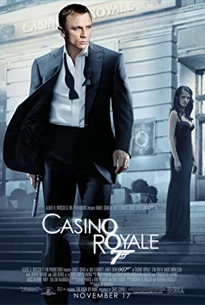
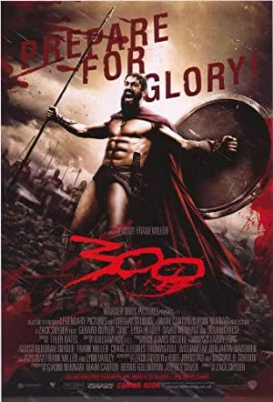
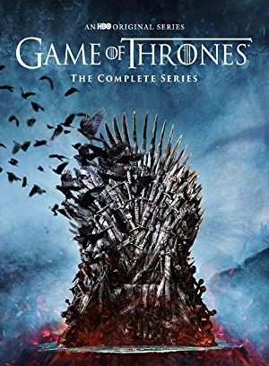
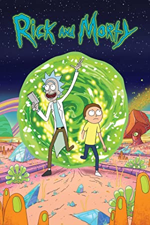
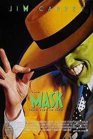

Get Extensive Details About Movies and Series from 150+ Streaming Platforms

Title : Casino Royale Type : movie Genre : Action, Adventure, Thriller Release date : 17 Nov 2006 Rated : PG-13 Duration : 144 min Director(s) : Martin Campbell Writer(s) : Neal Purvis, Robert Wade, Paul Haggis Actors : Daniel Craig, Eva Green, Judi Dench Plot : Awards : Ratings :
IMDB - IMDB - 8.0/10 Rotten Tomatoes - 94% Metacritic - 80/100

Title : 300 Type : movie Genre : Action, Drama Release date : 09 Mar 2007 Rated : R Duration : 117 min Director(s) : Zack Snyder Writer(s) : Zack Snyder, Kurt Johnstand, Michael B. Gordon Actors : JGerard Butler, Lena Headey, David Wenham Plot : Awards : Ratings :
IMDB - IMDB - 7.6/10 Rotten Tomatoes - 61% Metacritic - 52/100
Title : Doctor Strange In The Multiverse Of Madness Type : movie Genre : Action, Adventure, Fantasy Release date : 06 May 2022 Rated : PG-13 Duration : 126 min Director(s) : Sam Raimi Writer(s) : Michael Waldron, Stan Lee, Steve Ditko Actors : Benedict Cumberbatch, Elizabeth Olsen, Chiwetel Ejiofor Plot : Awards : Ratings :
IMDB - IMDB - 7/10 Rotten Tomatoes - 74% Metacritic - 60/100

Title : Game Of Thrones Type : Series Genre : Action, Adventure, Drama Year : 2011-2019 Rated : TV-MA Writer(s) : David Bennioff, D.B. Weiss Actors : Emilia Clarke, Peter Dinklage, Kit Harington Ratings : IMDB - 9.2/10 Plot : Awards :

Title : Rick And Morty Type : Series Genre : Animation, Adventure, Comedy Year : 2013- Rated : TV-MA Writer(s) : Dan Harmon, Justin Rolland Actors : Justin Rolland, Chris parnell, Spencer Grammer Ratings : IMDB - 9.2/10 Plot : Awards :
Title : Peaky Blinders Type : Series Genre : Crime, Drama Year : 2013-2022 Rated : TV-MA Writer(s) : Steven Knight Actors : Cillian Murphy, Paul Anderson, Sophie Rundle Ratings : IMDB - 8.8/10 Plot : Awards :

Title : The Mask Type : movie Genre : Action, Comedy, Crime Release date : 29 Jul 1994 Rated : PG-13 Duration : 101 min Director(s) : Chuck Russell Writer(s) : Michael Fallon, Mark Verheiden, Mike Werb Actors : Jim Carrey, Cameron Diaz, Peter Riegert Plot : Awards : Ratings :
IMDB - IMDB - 6.9/10 Rotten Tomatoes - 80% Metacritic - 56/100

comments